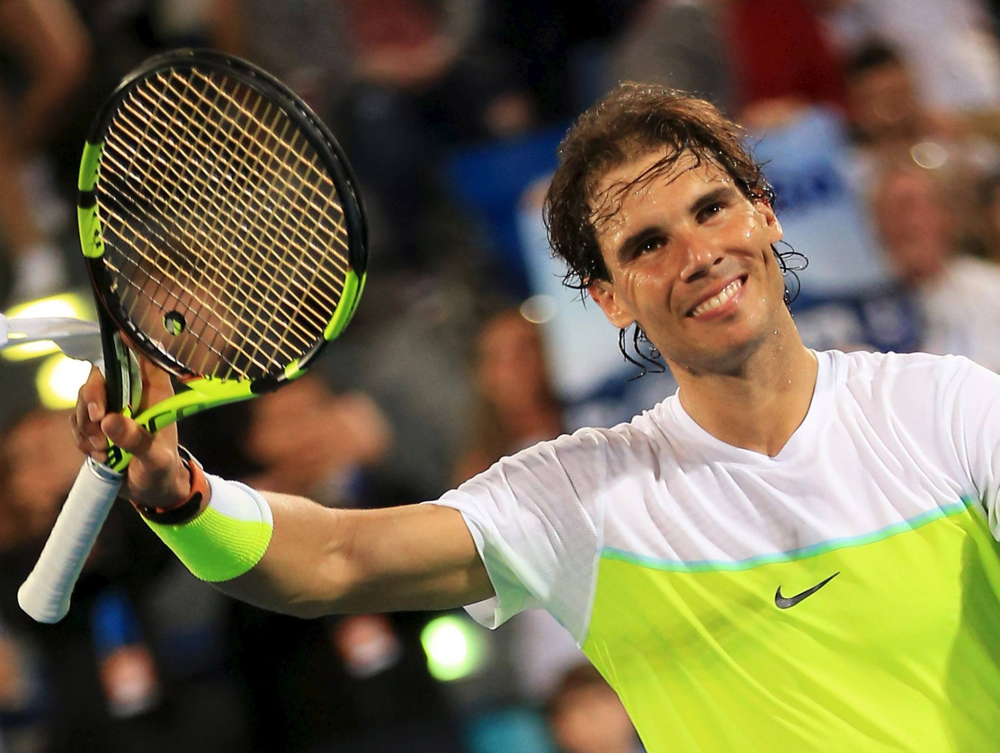

Rafael Nadal

Rafael Nadal Parera(born 3 June 1986) is a Spanish professional tennis player. Nadal has been ranked world No. 1 in singles by the Association of Tennis Professionals (ATP) for 209 weeks, and has finished as the year-end No. 1 five times. Nadal has won 22 Grand Slam men's singles titles, including a record 14 French Open titles. He has won 92 ATP-level singles titles, including 36 Masters titles and an Olympic gold medal, with 63 of these on clay courts. Nadal is one of only two men to complete the Career Golden Slam in singles.[b] His 81 consecutive wins on clay constitute the longest single-surface win streak in the Open Era.
For over a decade, Nadal has led men's tennis along with Roger Federer and Novak Djokovic as the Big Three. At the start of his professional career, Nadal became one of the most successful teenagers in ATP Tour history, reaching the world No. 2 ranking and winning 16 titles before turning 20, including his first French Open and six Masters events. Nadal became the world No. 1 for the first time in 2008 after defeating Federer in a historic Wimbledon final, his first major victory off clay. He followed up his win with an Olympic singles gold at the 2008 Beijing Olympics. After defeating Djokovic in the 2010 US Open final, then-24-year-old Nadal became the youngest man in the Open Era to achieve the Career Grand Slam, and the first man to win majors on three different surfaces (hard, grass, and clay) in the same year (Surface Slam).
Major trophies
- 2009,2022 Austrailan open
- 2005-2008,2012-2014,2017-2020,2022 Frecnh Open
- 2008,2010 Wimbledon
- 2010,2013,2017,2019 US open